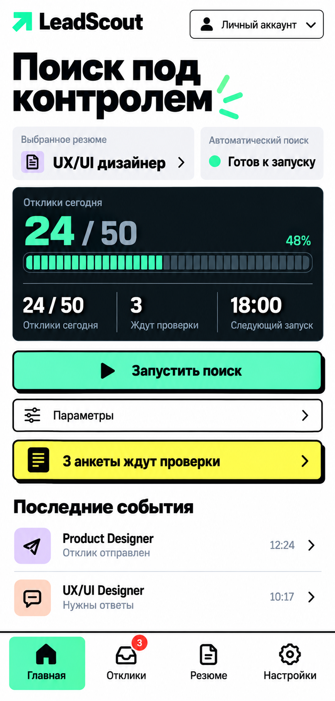
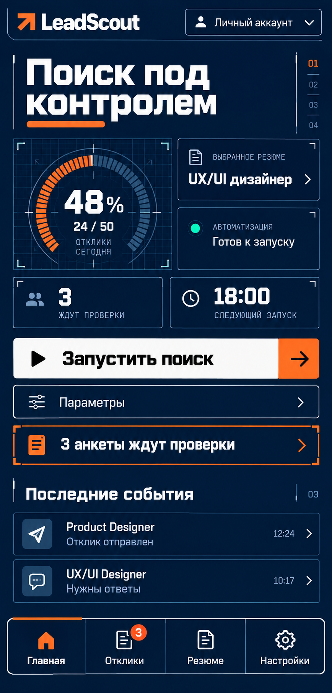
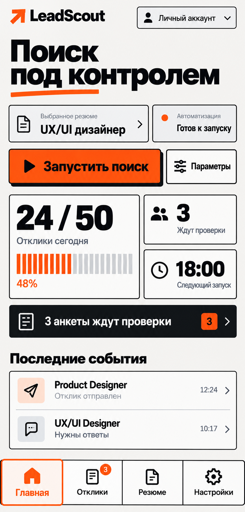
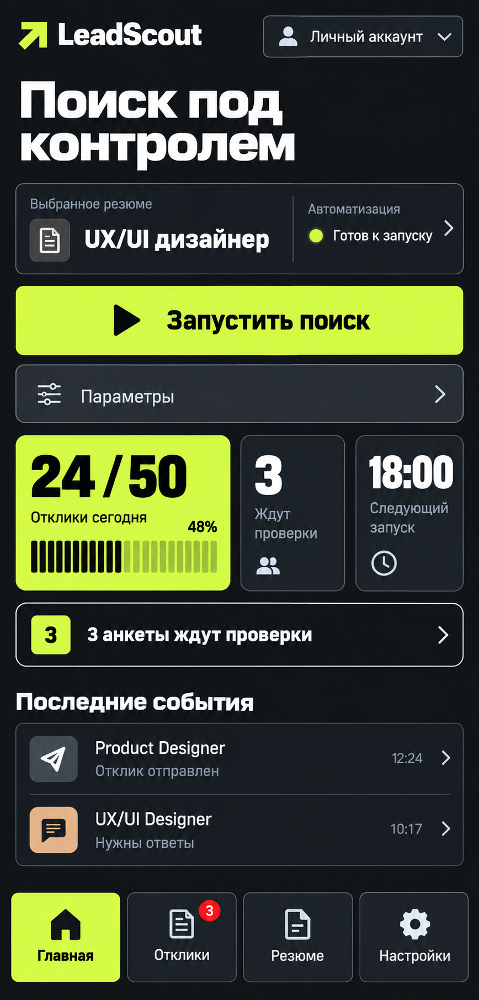
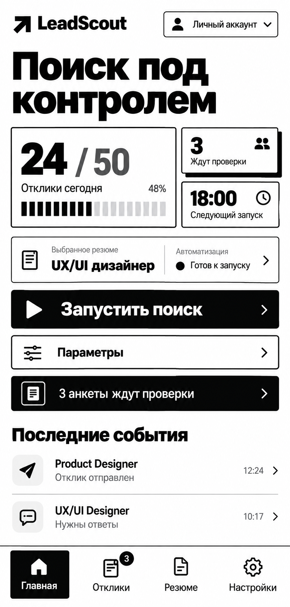
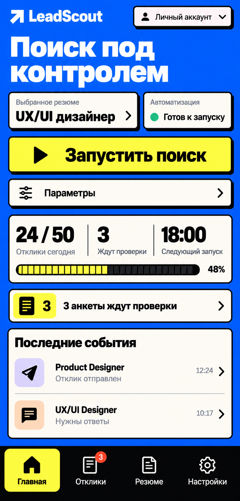
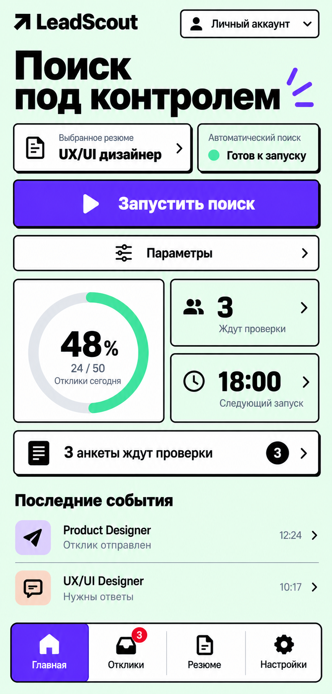
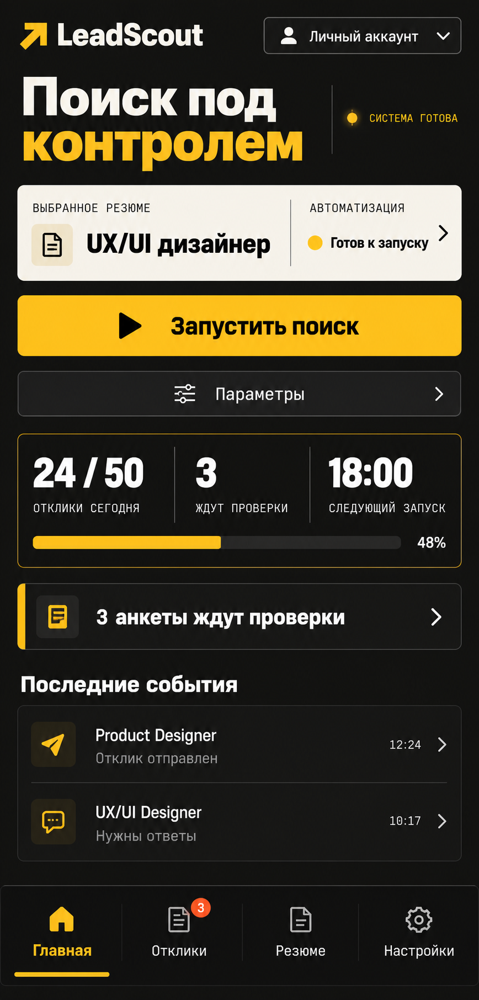

Core — основной гибрид

№6 — основной гибрид выбранных направлений Swiss, Radar и Punch. №7–13 — семь альтернатив. Нажмите на макет, чтобы открыть его крупнее. Данные демонстрационные.







